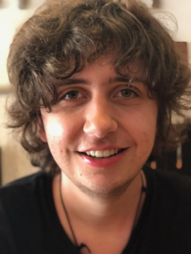

Home
Contact
Opdrachten
Games
Quiz
Over
Mijn motivatie is dat ik mijn creativiteit goed kan inzetten bij het grafisch vormgeven. Ik ben visueel ingesteld. Ik werk accuraat en gedisciplineerd, leer snel en pak nieuwe zaken vlug op en zorg altijd dat ik mijn werk op tijd af heb. Ik kan goed zelfstandig werken, ben leergierig, breed geïnteresseerd en wil me altijd verder ontwikkelen. Ik heb een groot verantwoordelijkheidsgevoel en doe wat ik beloof. Ik kan mijn grote fantasie goed aanpassen aan verschillende situaties en kan iets bijzonders maken.
Ik koos voor de opleiding Game Artist op het Alfa College (Atoomweg Groningen) omdat dit ook echt iets voor mij is. Ik vond het altijd leuk om met technologische dingen te werken op de computer. Spelletjes spelen die met ontwerp en design te maken hebben zoals Floorplanner, Sims en Sketchup. Plattegronden tekenen en ontwerpen van zelfbedachte steden en wijken.
Ik heb mijzelf, door interesse en doorzettingsvermogen, diverse softwareprogramma’s eigen gemaakt. Met mijn autodidactische eigenschappen leer ik snel en goed. Ik werk met verschillende programma’s om de opdrachten te maken. Bv. Adobe Photoshop. Het coderen van websites maakt het mogelijk om veel te experimenteren. Ik wil me blijven ontwikkelen om up to date te blijven.
Maar het begon allemaal toen ik klein was toen ik via de computer de Engelse taal leerde en filmpjes zag hoe mensen huizen bouwden via de Sims, Minecraft, etc. Ik ben altijd al in architectuur geïnteresseerd geweest, zag ook altijd gezichten in huizen en ik vond het ook altijd leuk om naar huizen te kijken qua design. Eigenlijk vind ik veel meer dingen interessant die met ontwerpen en architectuur te maken hebben. Mijn enthousiasme hoop ik in een persoonlijk gesprek over te kunnen brengen.
Cem Renklicicek van Klas 1GA Alfa College (26-10-2020)